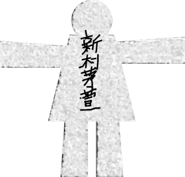
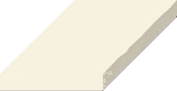
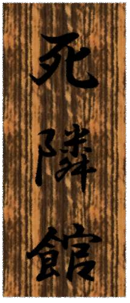

This scene is not unlocked yet in your progress
死の隣人

ラストはチガ姉か。
トリはちょっと大変そうだが……。
トリはちょっと大変そうだが……。



「まあ、当然最後は茅萱だね」
チガ姉、字汚な。
チガ姉、字汚な。


「ん……じゃあ、最後は私ね」
幾分酒が抜けたのか、話し方が元に戻っていた。
幾分酒が抜けたのか、話し方が元に戻っていた。
「ん……私は今、1人暮らし。
これは東京の大学に入って、最初の部屋から次の部屋に引っ越すまでの話……」

――あの日、借りる部屋を探すために、1人で東京に来ていました。
これからどんなところが私のお城になるのだろう。
初めての1人暮らしでわくわくしていました。
これからどんなところが私のお城になるのだろう。
初めての1人暮らしでわくわくしていました。
駅と大学から近くて便利な場所。
そして、できるだけ安いところ。
あちこち歩き回って、次の不動産屋を探していると……。
そして、できるだけ安いところ。
あちこち歩き回って、次の不動産屋を探していると……。
「ちょいと、そこのオッドアイのお姉さん」
不意に中年女性の声がしました。
声の方を向くと、道端に小さな机を置いて、椅子に座っている。
その人はテレビで見たことのあるような街角の占い師でした。
不意に中年女性の声がしました。
声の方を向くと、道端に小さな机を置いて、椅子に座っている。
その人はテレビで見たことのあるような街角の占い師でした。

「ん……私ですか？」
「おや、やっぱりオッドアイだね」
「え……？」
私の目を見て、オッドアイと言ったのではないのだろうか。
「おや、やっぱりオッドアイだね」
「え……？」
私の目を見て、オッドアイと言ったのではないのだろうか。
「これまた飛び切り美人だねえ！
どれ、お姉さんを見てあげようか」
「ん……でも、私……」
「お金はいらないよ。変なものを売りつける気もないし、ちょっとお姉さんが気になっただけだから。 まあ、10分くらいで終わるから」
東京のことをよく知らず、あまり警戒心のなかった私は、言われるがまま正面に座りました。
「ん……でも、私……」
「お金はいらないよ。変なものを売りつける気もないし、ちょっとお姉さんが気になっただけだから。 まあ、10分くらいで終わるから」
東京のことをよく知らず、あまり警戒心のなかった私は、言われるがまま正面に座りました。
「んー……」
机に置かれているカードを使うのかと思いきや、じっと私の顔を見ている。
「ん……カードは使わないんですか？」
「ああ、カード占いの練習しようと思ったんだけど、私の専門は人相占い。 お姉さんは、真剣に見た方がよさそうだ……」
「ん……そんなに私が気になるんですか？」
しかし占い師は、1分ばかり口を開きませんでした。
机に置かれているカードを使うのかと思いきや、じっと私の顔を見ている。
「ん……カードは使わないんですか？」
「ああ、カード占いの練習しようと思ったんだけど、私の専門は人相占い。 お姉さんは、真剣に見た方がよさそうだ……」
「ん……そんなに私が気になるんですか？」
しかし占い師は、1分ばかり口を開きませんでした。
「――なるほどね。
お姉さん……決して安易な選択をしないこと。
そして、お姉さんの身近には嘘を言う人間がいる。巧妙な心理操作でみんなを騙す人がね。
もしかしたら、命に関わるかもしれない」
ずいぶんと怖いことを言うな……。
ずいぶんと怖いことを言うな……。
「お姉さんはよくも悪くも素直でまっすぐな人だ。
くれぐれも、身近な人に騙されないようにね……。
以上！」
占い師は本当にお金も取らずに話を終わらせました。
占い師は本当にお金も取らずに話を終わらせました。
身近な人に騙される……。
だけど、私は1人で東京に出て来たから、身近な人などいない。
とはいえ所詮は占い。これからの人間関係に気を付けようくらいに思いました。
だけど、私は1人で東京に出て来たから、身近な人などいない。
とはいえ所詮は占い。これからの人間関係に気を付けようくらいに思いました。
そして新しい住居探しを続け――やっと見つけました。

大学から徒歩10分、駅から徒歩10分、スーパーから徒歩5分。
それで家賃2万円。
さすがにちょっと怪しいと思ったけど、不動産屋さんに聞いてみたら、
それで家賃2万円。
さすがにちょっと怪しいと思ったけど、不動産屋さんに聞いてみたら、
「築年数が80年だから安いんですよ。最近の学生さんも古すぎるところは嫌だって……。
でもちょっと前にリフォームしたから、冷暖房もあるし、ユニットバスもあるし、住む分には問題ないと思いますよ」
と対応した女性は、にこやかに答えてくれました。
と対応した女性は、にこやかに答えてくれました。
「ん……じゃあ、見学させてもらえますか？」
「はい、かしこまりました」
「はい、かしこまりました」

連れてこられたアパートは、確かに外観は古い。
でも古い家は荒田で慣れているし、特に気にしませんでした。
ゴキブリやムカデが出たところで、私は動じませんしね。
でも古い家は荒田で慣れているし、特に気にしませんでした。
ゴキブリやムカデが出たところで、私は動じませんしね。

うん、問題なく住めそうだ。
外観とは裏腹に、部屋の中はとてもきれい。
最近リフォームしたと言っていたし、これはなかなかいい物件に出会えたのではないか。
でも、気になることが1つあったんです。
外観とは裏腹に、部屋の中はとてもきれい。
最近リフォームしたと言っていたし、これはなかなかいい物件に出会えたのではないか。
でも、気になることが1つあったんです。

住んでいる人が見当たらなかったんです。
何と言うか……人の住んでいる気配がなかった。
私はこういう山育ちなので、生き物の気配にすごく敏感です。
何と言うか……人の住んでいる気配がなかった。
私はこういう山育ちなので、生き物の気配にすごく敏感です。
だけど、その時はさほど気にしませんでした。
きっと東京の雑踏を歩いたせいで、その辺も鈍っているのだろうと。
きっと東京の雑踏を歩いたせいで、その辺も鈍っているのだろうと。
私はこの部屋に決めました。
引っ越す部屋は205号室。
左右は204と206で、隣の206がこの階の端の部屋でした。
建物の名前は…… 『詩林館』
引っ越す部屋は205号室。
左右は204と206で、隣の206がこの階の端の部屋でした。
建物の名前は…… 『詩林館』
――そして、引っ越しの当日……。

おおむね荷物も運び終わって、さて、お隣さんに挨拶に行こうと思い、手土産を持って部屋を出ました。
隣のドアをノックしました。
あの時はたまたま人の気配がしなかっただけで、誰も住んでいないとは限らない。
206は空き部屋だったから、ノックしたのは204。
でもドアは開かずに、 代わりにノックが返ってきました。
あの時はたまたま人の気配がしなかっただけで、誰も住んでいないとは限らない。
206は空き部屋だったから、ノックしたのは204。
でもドアは開かずに、 代わりにノックが返ってきました。
「ん……？」
トイレでもないし、私に開けろと言っているの？
東京ってそういうものなの？
不思議に思いながら、私がドアを開けました。
出てきたのは――。
トイレでもないし、私に開けろと言っているの？
東京ってそういうものなの？
不思議に思いながら、私がドアを開けました。
出てきたのは――。

私と同じくらいの年齢の女性でしょうか。
でも、髪はぼさぼさで目が血走っていて、顔が青白く、ひどく痩せている。
私はその人を見ただけで面食らってしまいました。
でももっと驚いたのは……。
でも、髪はぼさぼさで目が血走っていて、顔が青白く、ひどく痩せている。
私はその人を見ただけで面食らってしまいました。
でももっと驚いたのは……。

部屋の中はリフォームされておらず、廃墟ほどにぼろぼろの部屋でした。
「ん……に、新村茅萱と言います。今度、隣に引っ越してきました……」
私は平静を装い挨拶しましたが、その人は私の顔をじっと見たままでした。
私は手土産のおまんじゅうを渡すと、その人はさっと、それを受け取りました。
そして……。
「ん……に、新村茅萱と言います。今度、隣に引っ越してきました……」
私は平静を装い挨拶しましたが、その人は私の顔をじっと見たままでした。
私は手土産のおまんじゅうを渡すと、その人はさっと、それを受け取りました。
そして……。
「後で行きます……」
とだけ言ってバタンとドアを閉められました。
とだけ言ってバタンとドアを閉められました。
あっけにとられたけど、やっぱり東京には変な人はいるんだなあとと思い、自室に戻りました。

204号室の住人も変だけど、私はあの部屋の中の方が気になりました。
人が住んでいるとは思えないほどに荒れ果てていた。
女の人も相当だけど、あの部屋の中がどうしても引っ掛かりました。
それに…… やっぱり住人がほとんどいない。
人が住んでいるとは思えないほどに荒れ果てていた。
女の人も相当だけど、あの部屋の中がどうしても引っ掛かりました。
それに…… やっぱり住人がほとんどいない。

もしかしたら、いわくつきの物件なのではないか。
名前は『詩林館』。
スマホで検索してみると……。
名前は『詩林館』。
スマホで検索してみると……。
"詩林館"との一致はありません。
おかしいな。いまどき建物の名前でそんなことあるのだろうか。
明日にでももう少し、調べてみることにしよう。
おかしいな。いまどき建物の名前でそんなことあるのだろうか。
明日にでももう少し、調べてみることにしよう。
――その夜。
「ん……」
ドアをたたくノックのような音で目を覚ましました。
一体何の音だろうか。
隣の人が何かしているのだろうか。
ノックのような音ではなく、まぎれもなくノックの音だ。
ドアをたたくノックのような音で目を覚ましました。
一体何の音だろうか。
隣の人が何かしているのだろうか。
ノックのような音ではなく、まぎれもなくノックの音だ。
電気を点け時計を見ると、夜の3時。
東京じゃ、こんな時間でも人が来るのだろうか。
東京じゃ、こんな時間でも人が来るのだろうか。
「ん……はーい」
不気味に思いながらも、ドアスコープを覗いてみました。
不気味に思いながらも、ドアスコープを覗いてみました。

「…………？」
人影が見当たらない。
いや、でもまだ人の気配を感じる。
人影が見当たらない。
いや、でもまだ人の気配を感じる。

「ひ……！？」
突然現れたかと思うと、ドアスコープの向こうから、隣の女性がこちらを覗いていました。
それにその人は全身が痙攣して、立っているのがやっとの様子。
突然現れたかと思うと、ドアスコープの向こうから、隣の女性がこちらを覗いていました。
それにその人は全身が痙攣して、立っているのがやっとの様子。
昼間よりもさらに血走った目で、ドアノブを激しくひねりノックを繰り返していました。
怖くて開けられませんでしたが…… その血走った眼の中に、必死で訴えるような、寂しさを感じさせる視線。
まるで私に助けを求めるような……。
私は意を決して、ドアを開けることにしました。
怖くて開けられませんでしたが…… その血走った眼の中に、必死で訴えるような、寂しさを感じさせる視線。
まるで私に助けを求めるような……。
私は意を決して、ドアを開けることにしました。
「で……
出た……
やっと出た……！」
ドアを開けると、その人は死人のようにやせ細った顔で、引きつるような笑顔を作りました。
しかし笑顔を作ることすら、この人の体力を奪っているように見える。
ドアを開けると、その人は死人のようにやせ細った顔で、引きつるような笑顔を作りました。
しかし笑顔を作ることすら、この人の体力を奪っているように見える。

私が挨拶で渡した、おまんじゅうの箱に似たものを持っている。
「あ、あの……！
お礼……です……！」
女の人は持っていた箱を押しつけるように渡してきました。
女の人は持っていた箱を押しつけるように渡してきました。
「ん……ありがとうございます……」
私は促されるまま、箱を受け取りました。
おまんじゅうのお礼なら、昼間でもいいのに……。
女の人は、震えながらじっとこちらを見ている。
この時、私は気がつきました。
おまんじゅうのお礼なら、昼間でもいいのに……。
女の人は、震えながらじっとこちらを見ている。
この時、私は気がつきました。

その人は緑と青のくっきりとしたオッドアイ。
私と一緒。
よく見ると、顔もなんとなく、私に似ている気がする。
私と一緒。
よく見ると、顔もなんとなく、私に似ている気がする。
「ん……あの……。あなたもオッドアイなんですね」
私がそう言うと、
私がそう言うと、
急いで自室へ帰ってしまいました。
気持ち悪い……。
いくら東京だからって、これはいくらなんでも……。
いくら東京だからって、これはいくらなんでも……。
受け取った箱をよく見ると、私が渡したおまんじゅうの箱と全く同じでした。
返されたのかと思ったけど、持った感じ、明らかに中身が変わっている。
本当に…… 気持ち悪い……。
返されたのかと思ったけど、持った感じ、明らかに中身が変わっている。
本当に…… 気持ち悪い……。
私は今のやり取りで、すっかり目が覚めてしまいました。
この箱の中には一体……。
ネズミの死体とか、箱いっぱいのグロテスクな虫とか……。
この箱の中には一体……。
ネズミの死体とか、箱いっぱいのグロテスクな虫とか……。
箱を振ってみると、
固いものが1つだけ入っているようだ。
私は思い切って、箱を開けてみることにしました。
私は思い切って、箱を開けてみることにしました。
「ん……？ なにこれ……」
中に入っていたのは、古い木の板。
そしてその板には……
中に入っていたのは、古い木の板。
そしてその板には……

死隣館
と毛筆で書かれていました。
なにこれ……！ 余計気持ちが悪い……！
これなら虫や生き物の死体の方が、嫌がらせと分かるからまだ理解できる。
これは、この建物の『詩林館』と『死隣館』をかけているのだろうか。
これなら虫や生き物の死体の方が、嫌がらせと分かるからまだ理解できる。
これは、この建物の『詩林館』と『死隣館』をかけているのだろうか。
「う……！」
私は一瞬、めまいと吐き気に襲われました。
こんなものを見たせいか、どうも体調が悪い。
私はすぐに休むことにしました。
隣の人の意図は分からないけど、明日この看板は捨ててしまおう。
私はベッドにもぐり込みました。
東京生活初日から、散々だ……。
――私は雷雨の音で目を覚ましました。
私の顔に、何やらぽたぽたと水滴が落ちている。
もしかして雨漏り！？
びっくりして起き上がると……。
私の顔に、何やらぽたぽたと水滴が落ちている。
もしかして雨漏り！？
びっくりして起き上がると……。
部屋の中が全く違う様相でした。
ぼろぼろに荒れ果て、持ってきた荷物は何十年も経ったかのように、朽ち果てていた。
これはいったいどういうことだ！？ まるで隣の部屋のような……！
床を見ると、
ぼろぼろに荒れ果て、持ってきた荷物は何十年も経ったかのように、朽ち果てていた。
これはいったいどういうことだ！？ まるで隣の部屋のような……！
床を見ると、
受け取ったあの木の板がありました。
――死隣館
私は怖くなって部屋から出ようとしました。
しかし…… ふらりと倒れてしまいました。
全身に力が入らない……。
何日も食事を摂らなかったかのような感覚。
自分の手を見ると……
私は怖くなって部屋から出ようとしました。
しかし…… ふらりと倒れてしまいました。
全身に力が入らない……。
何日も食事を摂らなかったかのような感覚。
自分の手を見ると……

自分のものと思えないほど痩せていて、骨と皮だけになっていました。
これって、あの隣の部屋、そして隣の女の人と同じだ……！
昨夜、この看板を受け取ったときから、体調が悪かった。
もしかしてこの現象は、看板のせいなのでは……。
ということは、あの人は分かっていて私に渡したのだろうか。
もしかしてこの現象は、看板のせいなのでは……。
ということは、あの人は分かっていて私に渡したのだろうか。
私は壁伝いに自力でドアまで行き、開けようとしました。
しかし、強い力で抑えつけられているかのように動かない。
このままではまずい……！
この看板があると、私はこの部屋と同じように朽ち果ててしまうのでは……！
そう思い、窓から投げ捨てようとしたけど、窓もがっちりと閉まって開けられない。
壁に穴を開けようにもそれほどの力もない。
しかし、強い力で抑えつけられているかのように動かない。
このままではまずい……！
この看板があると、私はこの部屋と同じように朽ち果ててしまうのでは……！
そう思い、窓から投げ捨てようとしたけど、窓もがっちりと閉まって開けられない。
壁に穴を開けようにもそれほどの力もない。

どこかへ電話して助けを呼ばないと……！
スマホを手に取ると、
スマホを手に取ると、
砂のように、さらさらと崩れ去ってしまいました。
この部屋から出る方法がない。
大声を出すほどの力もない。
この部屋を探索するほどの体力もない。
誰かが来ない限り……助からない……。
大声を出すほどの力もない。
この部屋を探索するほどの体力もない。
誰かが来ない限り……助からない……。
雨漏りで濡れ、シミだらけのベッドに横たわりました。
良物件と思いきや、こんな罠があったとは……。
世の中にうまい話などあるはずがない。
良物件と思いきや、こんな罠があったとは……。
世の中にうまい話などあるはずがない。

時間が見えるかのように、天井の板は剥がれ落ち、壁紙もどんどん古くなっていく。
部屋の中はさっきにも増して朽ちていく。
もう一度自分の手を見ると……
部屋の中はさっきにも増して朽ちていく。
もう一度自分の手を見ると……

生きているのが不思議なほどにやせ細っている。
この部屋と私だけどんどん時間が経過し、死へ一直線に向かっているような感覚。
その時間経過に合わせて、極度の空腹が襲ってくる。
しかし食べ物はどれも腐っている。
だれかが食べ物を届けてくれない限り、餓死してしまうだろう……。
その時間経過に合わせて、極度の空腹が襲ってくる。
しかし食べ物はどれも腐っている。
だれかが食べ物を届けてくれない限り、餓死してしまうだろう……。
ノック……？
ドアをノックする音……！
誰かが来てくれた！
私は最後の力を振り絞り、ドアに向かいました。
しかしドアはこちらから開けることができない。
代わりにこちらからノックしました。
ドアをノックする音……！
誰かが来てくれた！
私は最後の力を振り絞り、ドアに向かいました。
しかしドアはこちらから開けることができない。
代わりにこちらからノックしました。
すると、向こうからの手ほどきにより、難なく開きました。
これで……これで助かる！
でも、私はその向こうにいる人を見て、驚きました。
これで……これで助かる！
でも、私はその向こうにいる人を見て、驚きました。
まさに昨日、手土産を持って訪れた私自身でした。
「ん……あの……新村茅萱と言います。今度、隣に引っ越してきました……」
「ん……あの……新村茅萱と言います。今度、隣に引っ越してきました……」
頭の整理が追いつかず、本能的に差し出された手土産を奪い、ドアを閉めました。
もう空腹に耐えきれなかった。
死体をむさぼる食人鬼のように、20個のおまんじゅうをむさぼりました。
あまりの嬉しさに、涙と唾液、鼻水を垂れ流しながら……。
あまりの嬉しさに、涙と唾液、鼻水を垂れ流しながら……。
しかしおまんじゅうを口に入れながら、激しい後悔に襲われました。
いくら食べ物に目がくらんだといっても、どうしてあのまま部屋から逃げ出さなかったのか。
いくら食べ物に目がくらんだといっても、どうしてあのまま部屋から逃げ出さなかったのか。
でも今は、この甘くやわらかなおまんじゅうの食感とのどごしがたまらない。
あの時の私は、目に入ったものをむさぼる知性のないゾンビでした。
あの時の私は、目に入ったものをむさぼる知性のないゾンビでした。
おまんじゅうを全て食べ、少し落ち着いたところで、これからのことを考えた。
今度はミスせず、逃げ出すことだけを考えよう。
昨日の私なら、夜中にドアを開けられるはず。
そしてこの看板を渡せば……！
今度はミスせず、逃げ出すことだけを考えよう。
昨日の私なら、夜中にドアを開けられるはず。
そしてこの看板を渡せば……！
いや……そんなことをしたら隣の部屋の私が同じ目に遭ってしまう。
でも、このままでは確実に私は死ぬ。
もう、選択肢はなかった。
でも、看板を渡した後、どうすればいいのかは分からない。
そもそもあの後、204号室の私は助かったのかどうかも分からない。
でも、このままでは確実に私は死ぬ。
もう、選択肢はなかった。
でも、看板を渡した後、どうすればいいのかは分からない。
そもそもあの後、204号室の私は助かったのかどうかも分からない。
――気がつくと、すでに夜中になっていました。
あまりに体力を消耗していたせいで、いつの間にか眠っていたようだ。
また、すごくお腹が空いている。
身体の衰弱もひどいし、部屋はカビの嫌な臭いしかしない。
あまりに体力を消耗していたせいで、いつの間にか眠っていたようだ。
また、すごくお腹が空いている。
身体の衰弱もひどいし、部屋はカビの嫌な臭いしかしない。
今、何時だろうか。
もし夜中の3時なら、部屋のドアが開くかもしれない。
私は手探りで箱に看板を入れて、ドアノブに手をかけました。
もし夜中の3時なら、部屋のドアが開くかもしれない。
私は手探りで箱に看板を入れて、ドアノブに手をかけました。
するとドアが難なく開いたのです。
このチャンスを逃すわけにはいかない！
夜中だろうが構っていられない。
隣の私にこれを押し付けるのだ。
このチャンスを逃すわけにはいかない！
夜中だろうが構っていられない。
隣の私にこれを押し付けるのだ。
倒れそうなのをこらえ、
隣の部屋をノックしました。
私が出てきた部屋は205、ノックした部屋は206。
ここが1番端の部屋だ。
私が出てきた部屋は205、ノックした部屋は206。
ここが1番端の部屋だ。
く……！ 早く起きてよ、私！
また、あのすさまじい空腹が襲いかかり、押しつぶされてしまいそうだ！
早く……早く……！
ふらっと意識を失いそうになり、ドアにもたれかかるも、必死で体勢を戻しました。
また、あのすさまじい空腹が襲いかかり、押しつぶされてしまいそうだ！
早く……早く……！
ふらっと意識を失いそうになり、ドアにもたれかかるも、必死で体勢を戻しました。
すると、昨日の私そのままの人が出てきました。
やった……！ これで助かるんだ……！
久しぶりの笑顔がこみ上げてきました。
やった……！ これで助かるんだ……！
久しぶりの笑顔がこみ上げてきました。
「あ、あの……！ お礼……です……！」
看板を押しつけるように渡しました。
看板を押しつけるように渡しました。
しかしその瞬間、もう1人の私に死のバトンが渡された。
私は自分が生きるために、この人を殺そうとしているのだ。
不思議そうな顔でお礼を言われましたが、
「あなたもオッドアイ……」
そこまで言われて、かすかに湧いて出た良心の呵責に耐え切れませんでした。
私は自分が生きるために、この人を殺そうとしているのだ。
不思議そうな顔でお礼を言われましたが、
「あなたもオッドアイ……」
そこまで言われて、かすかに湧いて出た良心の呵責に耐え切れませんでした。
部屋に戻らず逃げ出そうとしましたが、もう立っているのも限界。
このままでは、私は部屋に戻らなくても、死んでしまうだろう。
このままでは、私は部屋に戻らなくても、死んでしまうだろう。
最後の力を振り絞って自室に戻りました。
これで助かるなら……それでいい……。
死ぬならもう、仕方ない。
やれる……だけの……ことは……やった……のだ。
死ぬならもう、仕方ない。
やれる……だけの……ことは……やった……のだ。
――外からかすかな喧騒が聞こえる……。
気がつくと、私はもとの部屋に倒れていました。
手を見ると痩せておらず、体の調子もいい。
助かったんだ……。
一体あの看板は何だったのか。
死隣館とは……何なのだろうか。
私は恐ろしくなって、すぐに部屋を引き払いました。
手を見ると痩せておらず、体の調子もいい。
助かったんだ……。
一体あの看板は何だったのか。
死隣館とは……何なのだろうか。
私は恐ろしくなって、すぐに部屋を引き払いました。
その後、私は1度だけ、詩林館の前を通りかかりました。
変わらずに古いままの外観。
しかし、それとは不釣り合いにリフォームされた部屋。
そして死のバトン。
隣人が隣人に死をもたらす死隣館。
変わらずに古いままの外観。
しかし、それとは不釣り合いにリフォームされた部屋。
そして死のバトン。
隣人が隣人に死をもたらす死隣館。
私が看板を渡したもう1人の私には、もう看板を渡す相手がいなかった。
あの人はどうなってしまったのか。
生きているのか、朽ちているのか。
あの人はどうなってしまったのか。
生きているのか、朽ちているのか。
まだ知性を失ったゾンビのように、食料を求めているのだろうか。
もしかしたら…… 今も……。
もしかしたら…… 今も……。
「これで私の話は終わりです」

「うわあ……ある意味ループものですね……。
206のチガ姉はどうなったんでしょう……」
「ん……あくまでも怪談だからね。
私の作り話かもしれないし、夢だったかもしれないし……」
Read ✓ Next: 絵梨奈ちゃん →